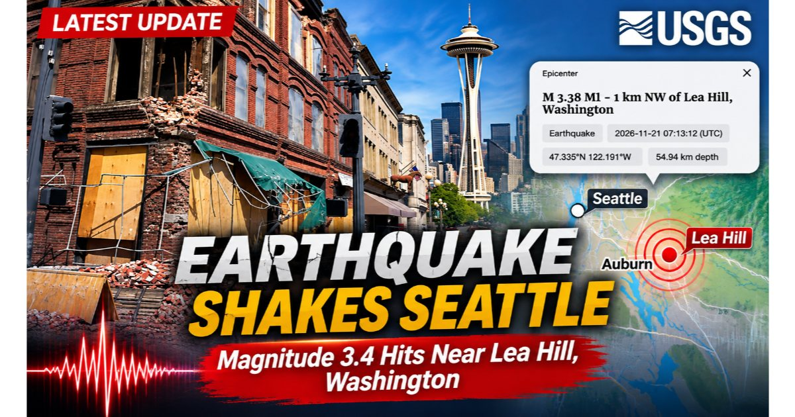
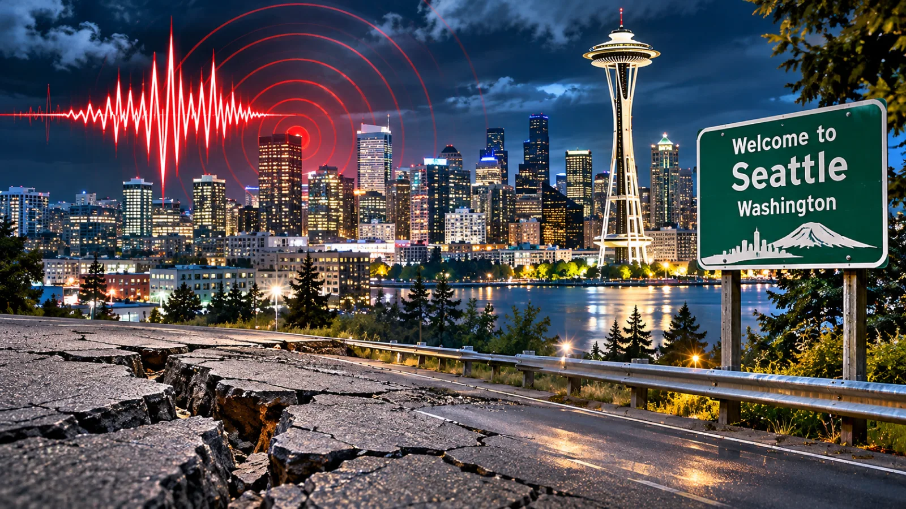
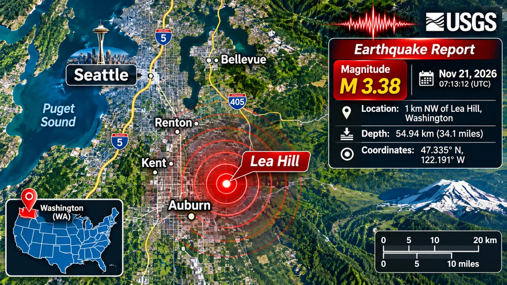
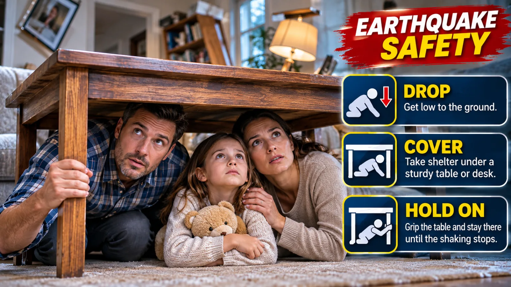
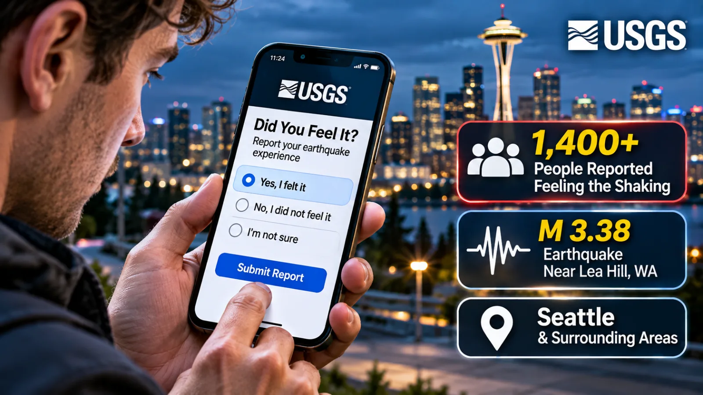
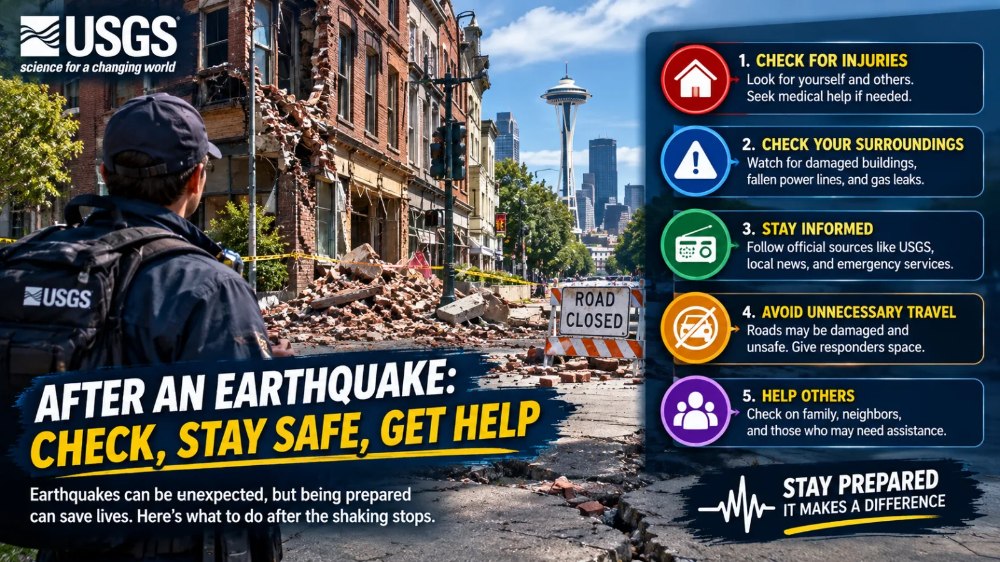
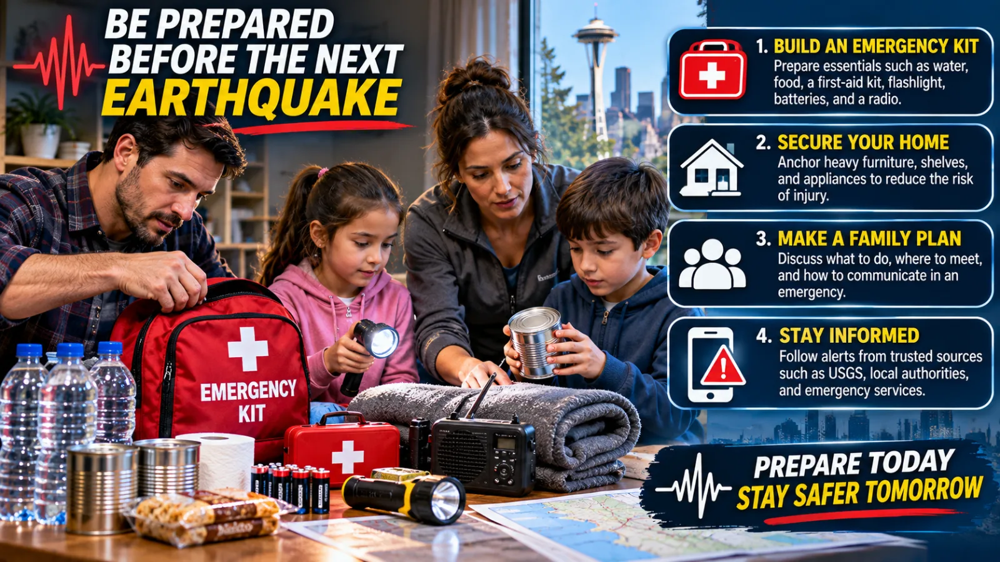

Magnitude 3.4 Earthquake Near Seattle: Late-Night Tremor Shakes Washington's Puget Sound Region
A late-night earthquake near Auburn was felt by people across parts of the Puget Sound region. The updated USGS report places the magnitude 3.4 event near Lea Hill, about 34 kilometres southeast of Seattle.
5 min read · 2026-11-21

A brief shake late Friday night caught the attention of residents across the Seattle area. The earthquake was centred near Lea Hill, close to Auburn in Washington State, rather than beneath downtown Seattle. Although the event was relatively modest in magnitude, reports from people who felt it quickly drew attention to the region's seismic activity. Updated seismic information from the U.S. Geological Survey (USGS) puts the event at magnitude 3.4, with a depth of about 55.5 kilometres. Here is what is known—and what the numbers do and do not mean.
A Late-Night Earthquake Near Auburn
The earthquake occurred at 11:13 p.m. Pacific Standard Time on Friday, November 20, 2026. The reported epicentre was approximately 1 kilometre west of Lea Hill, Washington, an area near Auburn and roughly 34 kilometres (21 miles) southeast of Seattle.
The event was recorded at 07:13:12 UTC on November 21. Because the epicentre was outside Seattle itself, describing it as an earthquake near Seattle is more precise than saying the city centre was directly struck.

Seattle’s iconic skyline and Space Needle are shown alongside a visual representation of seismic activity. A magnitude 3.38 earthquake was recorded near Lea Hill, Washington, on November 21, 2026 (UTC).
USGS Updated the Magnitude to 3.4
The USGS event record identifies the earthquake as magnitude 3.4, with a depth of approximately 55.5 kilometres (about 34.5 miles). The event was contributed by the University of Washington's Pacific Northwest Seismic Network.
Early automatic estimates can change as seismic stations provide additional measurements and analysts review the data. The first automatic estimate for this event was higher; the reviewed value was later revised to 3.4. This is a normal part of earthquake reporting and is why readers should check the latest official event page rather than rely on an early alert.

An illustrative map highlights the reported earthquake near Lea Hill, northwest of Auburn, Washington. The USGS event information lists a magnitude of 3.38, a depth of approximately 54.94 kilometers, and coordinates of 47.335°N, 122.191°W.Continue Reading →
Why People in the Region May Have Felt It
People in different parts of the Puget Sound region described feeling a short shake. Public felt reports are useful because they help scientists understand where shaking was noticed, beyond what can be inferred from the location of seismic instruments alone.
A felt report does not mean that a person experienced the same level of shaking as someone closer to the epicentre. The experience can vary with distance, building type, floor level, local ground conditions, and a person's activity at the time. The number of online reports can also change as more people submit responses.

Knowing what to do during an earthquake can help protect lives. Remember to Drop to the ground, Cover your head and neck under a sturdy table or desk, and Hold On until the shaking stops.
What a Magnitude 3.4 Earthquake Means
Magnitude describes the size of an earthquake at its source. It is not the same as intensity, which describes how strongly the ground shakes at a particular location and what people or structures experience there.
A magnitude 3.4 earthquake is considered a relatively small event compared with earthquakes capable of causing widespread structural damage. However, the magnitude alone cannot determine the experience at every address. Local ground conditions and building characteristics matter, and official shaking assessments provide more context than a single number.

Seismologists use seismic monitoring systems and waveform data to analyze earthquakes. This illustrative scene shows the reported magnitude 3.38 earthquake near Lea Hill, Washington, recorded on November 21, 2026 (UTC).Continue Reading →
Why Washington Pays Attention to Earthquakes
Washington is part of the seismically active Pacific Northwest. The region's earthquake hazards include the Cascadia Subduction Zone, crustal faults, and earthquakes within the descending Juan de Fuca Plate. These are different sources of seismic activity, and a small earthquake near Auburn should not automatically be interpreted as a warning that a major earthquake is imminent.
Scientists cannot reliably predict the exact date, location, or magnitude of the next major earthquake. Monitoring, research, stronger building practices, and public preparedness remain the practical ways to reduce risk.

Knowing what to do during an earthquake can help protect lives. Remember to Drop to the ground, Cover your head and neck under a sturdy table or desk, and Hold On until the shaking stops.
How to Stay Safer During an Earthquake
Emergency agencies recommend the simple instruction: Drop, Cover, and Hold On. Drop to your hands and knees, take cover under a sturdy table or desk if one is nearby, and hold on until the shaking stops. If there is no shelter, protect your head and neck with your arms and move away from windows.
After the shaking, check for injuries and visible hazards, use text messages when phone networks are busy, and follow instructions from local emergency officials. A basic emergency kit with water, food, a flashlight, batteries, essential medication, and a way to receive alerts can also help households prepare.

Preparing before an earthquake can make a difference. Families should assemble an emergency kit, secure heavy furniture, create a family communication plan, and stay informed through trusted sources and local emergency authorities.
The earthquake near Lea Hill was a reminder that seismic activity is part of life in the Pacific Northwest. The reviewed magnitude was 3.4, and the epicentre was southeast of Seattle—not in the city's downtown area. There is no reason to turn a modest earthquake into a prediction of disaster. The most useful response is to follow verified updates, understand the region's hazards, and make sure that family members know what to do when the ground begins to shake.